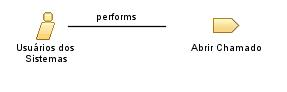

Role: Usuários dos Sistemas
Os usuários dos sistemas (stakeholders) representam qualquer pessoa que utiliza o sistema.
Relationships

Main Description
Pessoas que utiliza efetivamente o sistema no seu cotidiano.